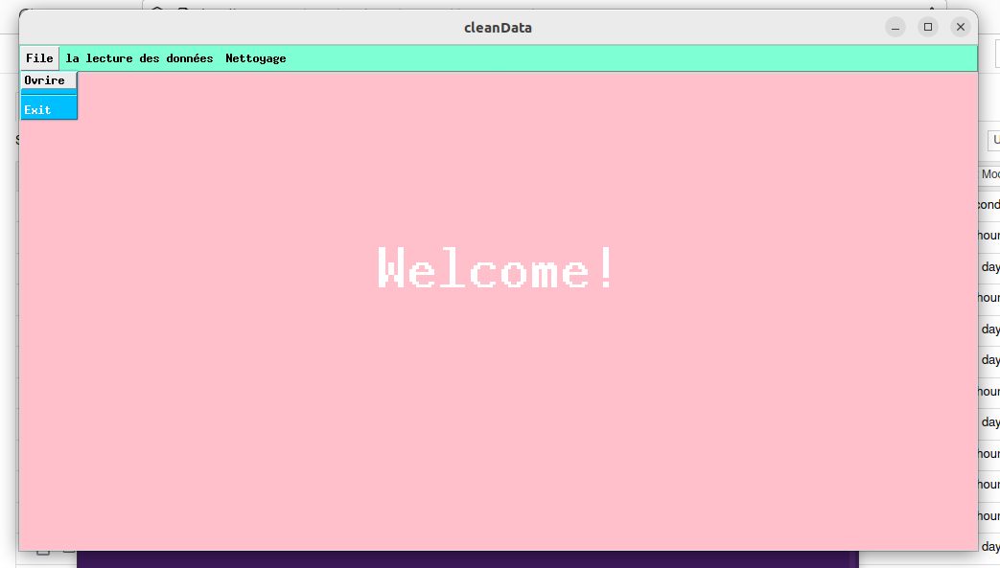
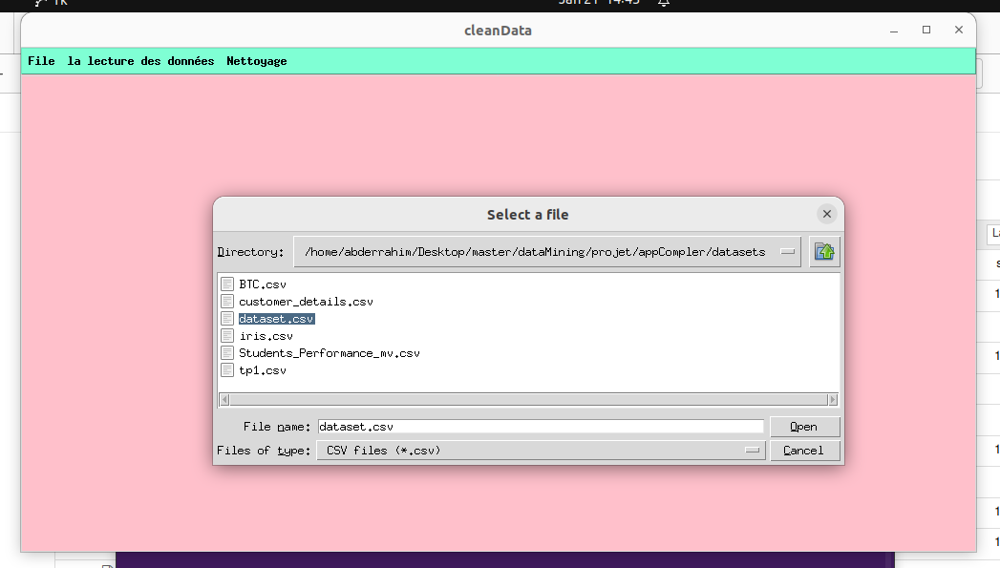
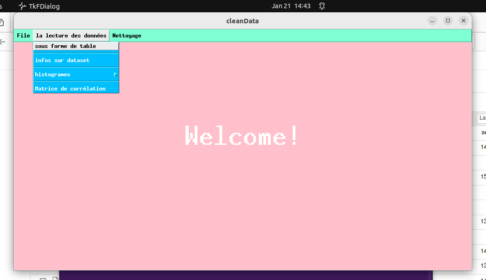
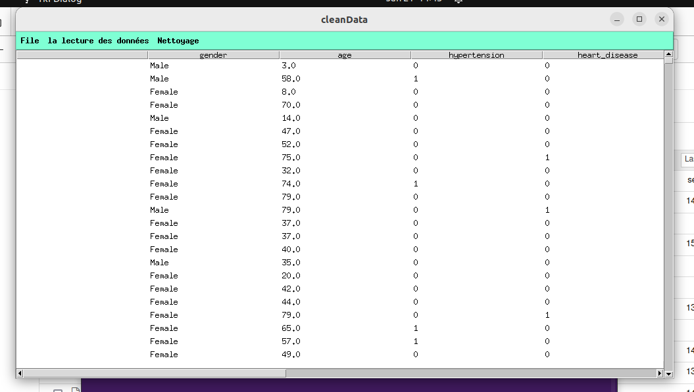
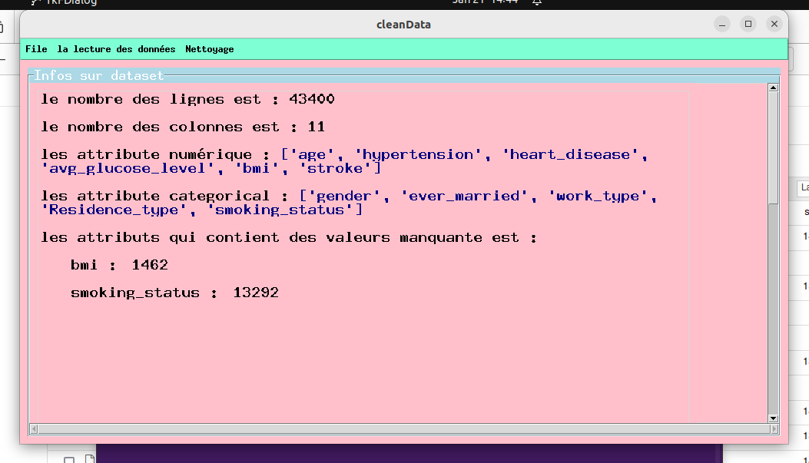
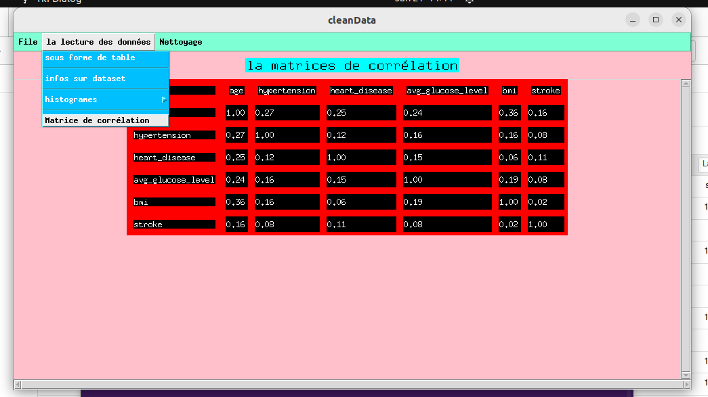

Table des matières
Définition
cleanData une app desktop qui permet pour nettoyer une dataset par l'utilisation des algorithmes de machine learning comme:
- Les algorithmes de Classification
- Les algorithmes de Régression
pour trouver une bon résultat.
Les processus
1. Lancer l’application

2. Choisir le dataset
Cliquer sur ouvrir

Après le clic sur ouvrire choisir le dataset

3. Lecture du dataset
Cliquer sur le menu 'Lecture des données' et choisir l'affichage que vous voulez.

Afficher dataset sous forme de table :

afficher les informations de dataset
- le nombre des lignes
- le nombre des colonnes
- les attribut numériques
- les attribut catégoriales
- les attributs qui contiennent des valeurs manquantes

Afficher les histogrammes
- les attributs catégorielles

- les attributs continues

- Afficher la matrice de corrélation :

4. Nettoyage des données
5. Récupérer les données nettoyées
Instructions pour récupérer les données nettoyées...